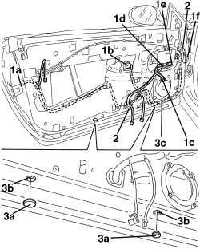

5505B10 FRONT DOOR WIRING (ONE), LEFT OR RIGHT - R.R. WITH WATER GUARD OR FRAME DETACHED
- Path
- Procedures > 55 ELECTRICAL EQUIPMENT > 5505 INSTRUMENT/GAUGE ELECTRICAL CIRCUITS > 5505B DOOR, BOOT AND BONNET WIRING > 5505B10 FRONT DOOR WIRING (ONE), LEFT OR RIGHT - R.R. WITH WATER GUARD OR FRAME DETACHED
- Kind
- repair procedure (removal / refitting; the operation number is the code)
- Applies to
- all engines; all production periods
- Interactive page
- https://sloeber94.github.io/elrnDB-aBrrSpdr/en/#/946002338
Applies to: all engines; all production periods
 Removing
Removing
 Refitting
Refitting1. Disconnect the electrical connections (1a, 1b, 1c, 1d, 1e, 1f).
Description | Component |
|---|---|
LEFT FRONT DOOR LOCK GEARED MOTOR | |
RIGHT FRONT DOOR LOCK GEARED MOTOR | |
LEFT FRONT ELECTRIC WINDOW MOTOR | |
RIGHT FRONT ELECTRIC WINDOW MOTOR | |
SPEAKER IN LEFT FRONT DOOR | |
SPEAKER IN RIGHT FRONT DOOR | |
DRIVER'S DOOR CONTROL UNIT (NPG) | |
PASSENGER SIDE DOOR JUNCTION UNIT (NPP) | |
DRIVER'S FRONT DOOR JOIN | |
PASSENGER FRONT DOOR JOIN |
2. Release the partition seal from the door frame.
3. Detach covers (3a) and loosen lower bolts (3b) securing the window mechanism to release the wiring in the area (3c).
4. Release the inner and outer wiring retainers from the chassis.
5. Remove the wiring.

Applies to: all engines; all production periods
Refitting
Removing- Check that the wiring is not damaged and that the individual conducts are correctly fastened to the connections.
- If necessary, carry out continuity tests.
- Position the wiring and do up the inner and outer retainers.
- Provisionally tighten the lower window mechanism bolts, then attach the covers.
- Fit the partition seal to the door frame.
- Connect the electrical connections.
- Adjust the window mechanim.
Op. 7005M26 ELECTRIC WINDOW MECHANISM FOR ONE FRONT DOOR LH OR RH - R.R
- Test the window by lowering fully a few times to check that it does not interfere with the door wiring.
Topics linked from this page (11)
- 7005M26 ELECTRIC WINDOW MECHANISM FOR ONE FRONT DOOR LH OR RH - R.R
- D030 DRIVER'S FRONT DOOR COUPLING
- D031 PASSENGER FRONT DOOR COUPLING
- M066 DRIVER'S DOOR CONTROL UNIT (NPG)
- M067 PASSENGER DOOR CONTROL UNIT (NPP)
- N050 DRIVER'S FRONT DOOR LOCK GEARED MOTOR
- N051 RIGHT FRONT DOOR LOCK GEARED MOTOR
- N060 DRIVER'S FRONT ELECTRIC WINDOW MOTOR
- N061 RIGHT FRONT ELECTRIC WINDOW MOTOR
- P035 SPEAKER IN FRONT DOOR LEFT
- P036 SPEAKER IN RIGHT FRONT DOOR